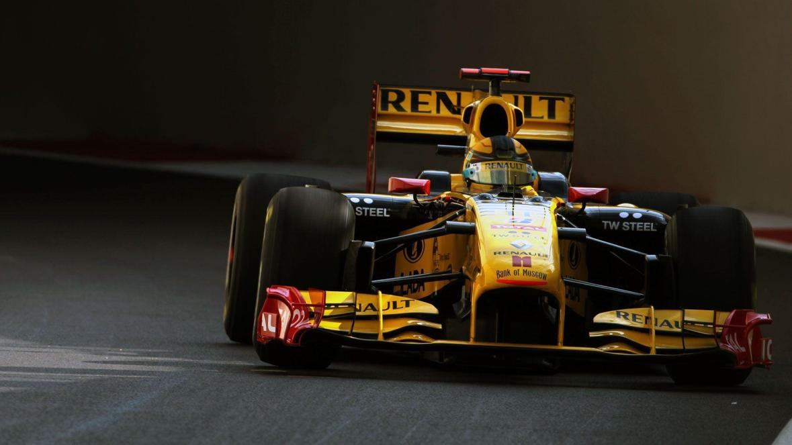
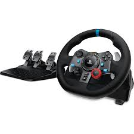
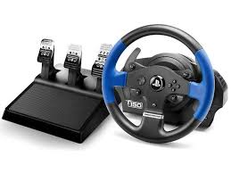
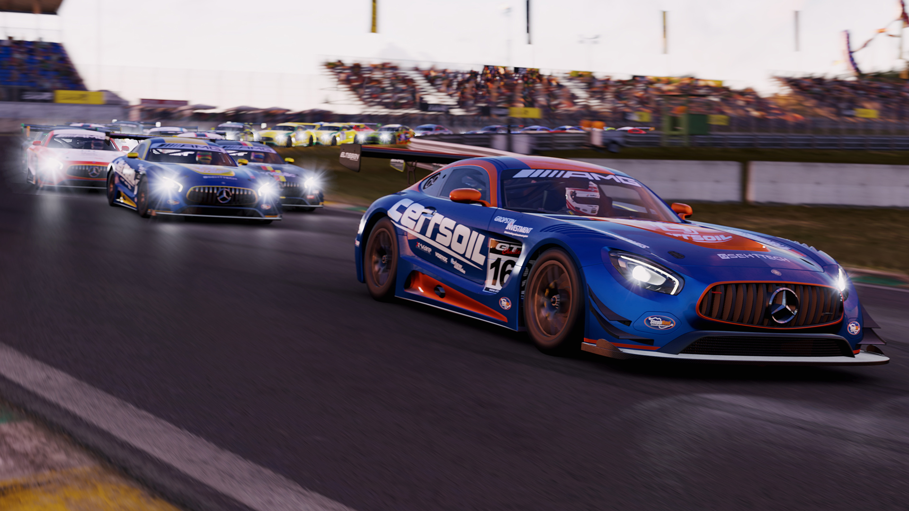

PROJECT CARS
|  |  |

|
Quality
One of the main reasons to the drastic price change is the quality of the racing wheels. For example a Racing wheel like Logitech G29 has way more plastic bits than a FANATECH wheel wich is
one of the most expensive brands on racing wheels on the market right now. There could also be
leather on the wheel which makes it cost more and so on the more metal and aluminum the more the wheel costs.
Forcefeedback
Many racing wheels have force feedback capability to provide a more immersive and challenging driving experience.
Racing wheels that support force feedback are typically equipped with a single motor that applies force to the steering wheel along a single axis, the axis of wheel rotation.
There is three differnt kinds of force feedback Gear driven which is the cheapest and most common kind of force feedback
where the force comes from gears that pull on the wheel. There is also belt driven which is a belt that applies force on the racing wheel,
belt driven is still considered a cheap option just a different one from gear this kind is smoother than gears.
And lastly there is direct drive Racing wheels, In a direct drive system, the steering wheel is directly coupled to the motor shaft. There are no gears or belts. Direct Drive wheels typically use larger motors to compensate for their lack of belts.
Pedals
Are you intrested in buying a Sim racing wheel? |
 |